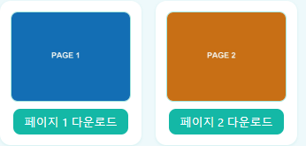

IMAGE TOOLBOX / GUIDE
PDF 파일 용량, 어떻게 줄일 수 있을까
이 사이트에서 스캔본·사진 PDF의 용량을 줄이는 방법과, 효과가 없는 경우를 함께 정리했습니다.
이 사이트에서 PDF 용량 줄이기
PDF 변환 도구의 'PDF 용량 줄이기'에 PDF를 올리면 각 페이지를 JPG 이미지로 다시 만들어 하나의 PDF로 묶어 줍니다. 압축 정도는 세 단계(고화질 150dpi / 보통 110dpi / 최대 압축 80dpi)에서 고를 수 있고, 한 번에 최대 50페이지, 파일당 최대 20MB까지 처리합니다. 모든 처리는 브라우저 안에서 이뤄집니다.
직접 만든 테스트로 확인한 결과입니다. 사진처럼 잡티가 많은 스캔형 3페이지 PDF(3.3MB)는 '보통'에서 약 484KB(85% 감소), '최대 압축'에서 약 197KB(94% 감소)가 됐습니다. 실제 스캔본의 결과는 원본 해상도와 내용에 따라 다릅니다.
모든 PDF에 효과가 있는 건 아닙니다
이 방법은 스캔한 문서, 사진을 모은 PDF처럼 이미지가 용량 대부분을 차지하는 PDF에 효과적입니다. 이미지 용량을 줄이면 PDF 전체 용량도 그만큼 줄어들기 때문입니다.
반면 글자 위주의 텍스트 PDF는 오히려 커집니다. 텍스트는 원래부터 용량이 매우 작은데, 이미지로 바꾸면 훨씬 커지기 때문입니다. 같은 테스트에서 글자만 있는 3페이지 PDF(14.5KB)가 약 298KB로 늘어났고, 이때 도구는 "결과가 원본보다 크다"고 알려주며 원본을 쓰라고 안내합니다. 또 어떤 PDF든 결과는 페이지가 이미지가 되므로 글자를 선택하거나 검색할 수 없게 됩니다. 텍스트 위주 PDF는 워드프로세서나 PDF 편집 프로그램의 용량 최적화 기능을 쓰는 것이 더 적합합니다.
압축 효과는 PDF 안에 들어있는 이미지의 종류에 따라서도 갈립니다. 사진처럼 색이 복잡한 스캔본은 크게 줄어드는 경우가 많지만, 단색과 선명한 경계가 많은 문서(도장, 표, 손글씨 위주)는 JPG 특성상 덜 줄거나 화질 저하가 눈에 띌 수 있습니다. 이럴 때는 압축 정도를 한 단계 올려 보세요(형식별 차이는 PNG vs JPG vs WebP 비교 참고).
직접 조절하고 싶다면: 추출 → 압축 → 재합치기
압축 정도를 더 세밀하게 정하고 싶으면 예전 방식도 쓸 수 있습니다. 1) PDF를 이미지로 변환해 페이지별로 추출합니다. 2) 추출된 이미지를 이미지 압축 도구에서 '목표 용량에 맞추기' 같은 설정으로 압축합니다. 3) 압축된 이미지를 이미지→PDF로 다시 합칩니다.

자주 묻는 질문
이 사이트에서 PDF를 바로 올려서 용량을 줄일 수 있나요?
네. PDF 변환 도구의 'PDF 용량 줄이기'에 PDF를 올리면 각 페이지를 JPG로 다시 만들어 용량을 줄여 줍니다. 최대 50페이지, 파일당 20MB까지 지원하고 압축 정도는 3단계입니다.
글자가 많은 보고서 PDF도 이 방법으로 줄일 수 있나요?
효과가 없고 오히려 커질 수 있습니다. 텍스트는 이미 용량이 작아서 이미지로 바꾸면 더 커지고, 글자를 선택·검색하는 기능도 사라집니다. 결과가 원본보다 크면 도구가 알려줍니다. 텍스트 위주 PDF는 다른 방법을 권장합니다.
스캔한 문서 PDF는 얼마나 줄어드나요?
원본 스캔 품질과 압축 정도에 따라 다릅니다. 이 글의 테스트(합성 스캔형 PDF 3페이지, 3.3MB)에서는 85~94% 줄었지만, 이미 압축된 스캔본은 덜 줄어듭니다. 이미지 압축 품질별 용량 변화는 실측 압축률 비교에서 확인할 수 있습니다.
50페이지가 넘는 PDF도 줄일 수 있나요?
PDF 용량 줄이기는 메모리 보호를 위해 최대 50페이지까지 지원합니다. 더 긴 문서는 나눠서 줄인 뒤 'PDF 합치기'로 다시 합치면 됩니다.
줄인 PDF 용량이 항상 원본보다 작아지나요?
아닙니다. 이미 잘 압축된 PDF나 글자 위주 PDF는 오히려 커질 수 있고, 이때는 결과가 더 크다는 안내가 표시됩니다. 그런 경우에는 원본을 그대로 쓰는 편이 낫습니다.
PDF에 사진과 텍스트가 섞여 있으면 어떻게 하나요?
페이지 전체를 이미지로 바꾸기 때문에 사진과 텍스트가 섞인 페이지도 통째로 이미지가 됩니다. 텍스트 검색·선택 기능을 유지하고 싶다면 이 방법 대신 워드프로세서나 PDF 편집 프로그램의 용량 최적화 기능을 쓰는 것이 낫습니다.